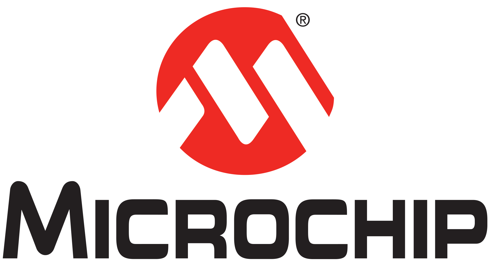
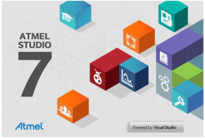
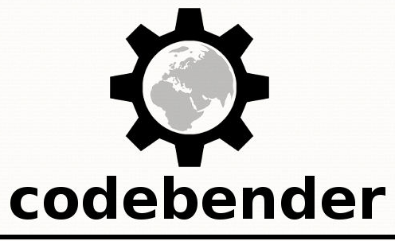

About
This page aims at presenting the Atmel University deliveries. Each new release or new project creation will be announced here.
If you do university workshops using our material and want to present their source, you can use the following non-official logos which are used only for our github organisation.
In case of partnership between your University or organization and Atmel (subsidiary of Microchip), you can demonstrate it by using the following corporate logos.

the following QR code point directly to this page if you want to print stickers and put them on boards.
Arduino IDE Boards Manager modules
Through the Atmel University Program, we provide some modules allowing the use of Atmel kits within Arduino LLC IDE.

Read more...
Basic examples for University teachers discovery
We provide also basic examples on some boards which allow teachers and student to discover the very basics of microcontroller's usage.
Read more...
codebender - Cloud-based Arduino programming
codebender is a Cloud IDE for Arduino, which allows you to code, compile, and program your Arduino straight from your browser, without the need to install all the necessary software.
Being online also means your projects are safely stored, accessible from anywhere you are, and you can easily share your code with others!
Read more...
Ardublockly - Arduino programming using functional blocks
Ardublockly is a visual programming editor for Arduino. It is based on Google's Blockly,
which has been forked to generate Arduino code.
Read more...
Fritzing - electronics made easy
Fritzing is an open-source hardware initiative that makes electronics accessible as a creative material for anyone.
Read more...
Authors and Contributors
We are Atmel engineers involved into University matters.
How to contribute?
Every contribution is welcome to any of our repositories. We expect only contributions to follow the usual git(hub) process: fork, patch, submit a pull request, review and merge to main line.
Support or Contact
Having trouble with one of our project? Don't hesitate to raise an issue to the appropriate repository issue tracker and we will do our best to fix or improve the according project.